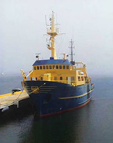
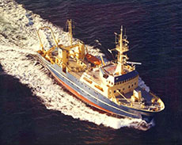

Referencias
Ingvar Emilsson Jonatansdottir
1926 -
Ingvar Emilsson es un reconocido oceanógrafo islandés que participó en muchas expediciones de investigación marina en territorio mexicano y en varias partes del mundo.
Nació en un pueblo de pescadores en Islandia oriental donde el principal sostén era la pesca. Sus primeros estudios fueron sobre matemáticas en la Universidad de Islandia (1947). Más tarde hizo la maestría en la Universidad de Oslo (1951) y el doctorado en la Universidad de Bergen (1953), ambos en Noruega, especializándose en las áreas de geografía física y oceanografía física. En ese periodo participó en numerosas expediciones oceanográficas y pesqueras hacia los mares árticos y subárticos.
Pasó unos años en Brasil haciendo estudios sobre las aguas y las lagunas costeras sudamericanas, así como dirigiendo cruceros de investigación en el océano Atlántico. Tiempo después, trabajó como asesor para la UNESCO en Cuba, donde estudió las áreas marítimas adyacentes a la isla.
Su relación con México comenzó en 1970, cuando fue enviado al Instituto de Geofísica de la UNAM. Ahí, realizó varias campañas oceanográficas con los buques de la Armada de México, los cuales estaban adaptados para hacer investigación marina.
Luego colaboró en la estructuración y la consolidación del recién transformado Instituto de Ciencias del Mar y Limnología de la UNAM (1982). En esta institución trabajó en el diseño y el equipamiento de los buques “El Puma” y el “Justo Sierra”, verdaderos laboratorios de trabajo flotantes, con los cuales se ha estudiado la biodiversidad acuática mexicana.
La docencia también ocupó parte de su vida, incluso participó en la planeación de algunos posgrados en ciencias marinas.
Es miembro de la Unión Geofísica Mexicana, la Sociedad Americana de Limnología y Oceanografía y la Unión Geofísica Americana y a la fecha es el coordinador de las Plataformas Oceanográficas de la UNAM, área a cargo de los buques universitarios.
Aportación
- Coordinación de Investigación Científica, UNAM


Los buqes de la UNAM: más que barsco, laboratorios flotantes.
Boletín UNAM-DGCS-773
Ciudad Universitaria